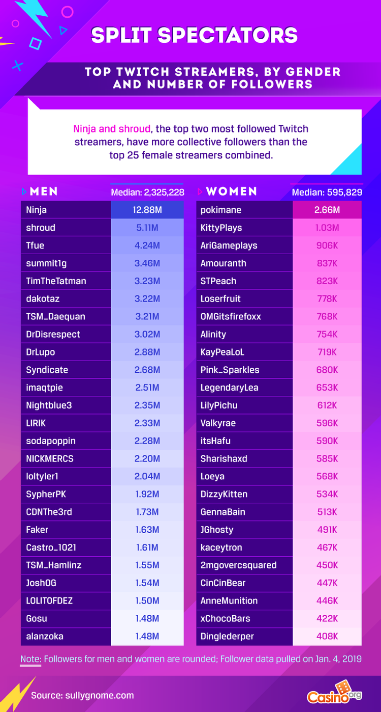

Additional Difficulties Women Face in Games
By Gabrielle Baker
Women make up nearly half of all gamers globally, the statistics ranging from 41% of the market in the United States to 45%
across Asian countries, which alone make up nearly half of the gaming population globally [12].
Yet, gaming poses unique challenges to the women who decide to play.
Sexualization of Characters
A glance into most games will quickly prove it to be a world catered nearly exclusively to the male fantasy.
Female characters in games, both non-player characters (NPCs) and player characters (PCs) alike, are frequently depicted as
sexual objects. Animations are grossly exaggerated and body types and proportions are hyper sexualized and not customizable,
with outfits consisting of heels and little else, while the male counterparts remain fully armored and usually with more
realistic animations. This does not even touch on the broad lack of transgender, nonbinary, and LGBTQIA+ characters.
This was once again witnessed in Amazon’s latest acquisition, Lost Ark , where female characters are seldom granted sufficient
clothing, body types are one-size-fits-all, female characters have ridiculous animations, such as walk cycles exaggerating
the swing of female characters’ hips, and classes are gender-locked.
Below we see a tweet displaying the exaggerated walk cycle noticed in Lost Ark.
what the fuck is this walk cycle lmfaaoooooooooooo pic.twitter.com/J8jSGLSMIW
— dani kruse (@danipanteez) February 12, 2022
While the game has been praised for its stellar storyline and combat, it has been criticized for being extremely tone deaf when it comes to female characters. While character customizability allows players to create characters that represent them, the appeal is quickly lost when the character’s body type and class are locked into a gender binary and then are stripped down upon entry into the game. This is depicted in the image below, a snippet of a personal character in Lost Ark, who left character creation fully clothed in battle gear, only to enter the game in the outfit shown below. Every subsequent outfit found in-game has been similarly disappointing.
Image credit to Archyde.com
The Unrealized Effects and the Solution
In a world where nearly half of assigned-female-at-birth (AFAB) individuals experience some form of body dysmorphia, with that number being significantly higher for transgender and non-binary individuals, it is shocking that video game companies are still portraying characters in this manner [2]. The WHO estimates nearly 70 million people worldwide have an eating disorder, and that number has been on the rise in the last decade, with prevalence nearly doubling from 3.4% to 7.8%, and women and non-binary individuals accounting for 90% of that number [9]. With an obvious lack of realistic representation and the prevalence of characters that are often distasteful to female players, it is a wonder that such a substantial percentage of global gamers are female.
Sexual Harassment and Gender-Based Discrimination
Sexual harassment is prevalent in every aspect of female-presenting individuals’ lives, and the gaming environment is no
different. Getting more women involved in video game development would significantly improve the ability of characters and
storylines to reflect a woman’s perspective. The question is, how is that supposed to happen when sexism, gender-based
discrimination, and sexual harassment are so deeply saturated in game development workspaces? These issues affect the very
women working in the game development industry attempting to make the necessary changes, as much as they affect the women
playing the games.
Activision Blizzard, the creator of games such as Call of Duty and World of Warcraft , were sued by the State of California
for discrimination against female employees, sexual harassment, and failing to take steps to prevent discrimination, harassment,
and retaliation. When the company released a statement denying the claims, more than 3000 employees signed a letter calling
the statement abhorrent and insulting, as well as staging a walkout and virtual protest that led to the resignation of the
president of Blizzard and their head of HR. While one hopes that women’s voices are making a difference, it can be
disheartening to know that since the previous lawsuit in 2021, yet another sexual harassment lawsuit has been raised
against Blizzard in 2022.
Another example of the issues faced by women working in the gaming industry is Zoe Quinn, a game developer whose ex-boyfriend
led an anti-progressive and sexist online harassment campaign against her in 2014, known as Gamergate. Quinn’s ex-boyfriend
claimed an unethical relationship had occurred between Quinn and a journalist, implying that her success did not stem from
her own work but rather from sexual favors, a common method used to invalidate the success of women. This led to the birth
of the harassment campaign against her, which included doxing, threats of rape, and death threats that led to her fleeing her
home and seeking protection with law enforcement. In January 2015, Quinn co-founded Crash Override, a private network of
experts to assist victims of online harassment. It is notable that such a network need exist.
While women working in gaming companies battle sexual harassment and discrimination, the women playing the games face a
similar battle on another front. A study by the Anti-Defamation League in 2019 found that 65% of gamers in the U.S.
have been severely harassed, including "physical threats, stalking and sustained harassment," while 74% reported experiencing
"some form of harassment" while playing. This has led to some 59% of women masking their gender while playing, including not
using a microphone for fear that male players will realize a female is playing among them [5].
In the instances where women have not hidden their gender, they are frequently met with immediate harassment or players dropping out
of teams to avoid playing alongside a woman, as many male gamers are either unwilling to share a gaming space with a woman or
hold discriminatory beliefs that female players are inferior. These actions add immediate difficulties to the game for women.
Below you will find further statistics from a survey done in 2019 of 388 female video game players.
Image credit: The Gamer.com
E-sports
For women seeking to make a career of E-sports (electronic sports: online multiplayer video game competitions for spectators, performed by professional gamers) or streaming (recorded or live broadcasts of players playing video games for spectators, performed by professional and amateur gamers alike), the burden of harassment and discrimination is an additional difficulty. While there is no question about the gender pay gap existing, it is far worse in E-sports. The pay gap between the top 10 E-sports players based on gender ranges to nearly 3 million USD in favor of the male players [1].
Image credit: The Gamer.com
Streaming does not fare much better, as all top 10 male streamers have more viewers than the top female streamer [1].
To quote Chiquita Evans, the first woman to be drafted into the NBA 2K League (E-sport league):
“I can personally testify that in-game harassment is still very much alive and kicking. Over the years I’ve had unsolicited and explicit dms and whispers,as well as abuse over voice chat, with numerous sexist statements and names used.
Almost always the harassment has begun after I’ve revealed myself as female in some way, either by speaking or by having a gender specific avatar or username.”
Stigma Against Games Less Played by Males
The discrimination continues in a different direction when looking at games that are less frequently enjoyed by males and contain less violence and competitiveness. Games such as Animal Crossing and The Sims have frequently been discriminated against by male gamers, disparaged as “not being real games” and their players “not real gamers” due to the lack of male interest and competitiveness. Despite male discrimination and stigma surrounding what has been deemed ‘chill games,’ these games enjoy continued wide-spread popularity, evidencing the need for a broader spectrum of game types to satisfy the diversity of the market. During the 2020 Covid 19 pandemic, such games saw an incredible rise in popularity. Animal Crossing , in particular, enjoyed 11 million players globally, including celebrities, as people used the game as a means of connection during a troubling and isolating time [6].

Image credit to Nintendo
Gaming Experience and Societal Norms
Another difficulty many women experience while gaming is that most games have a similar, intuitive system that takes time
to become accustomed to in order to play a game as it is intended. Society tends to normalize boys playing computer/video
games from an early age, and parents are frequently happy to allow a young boy ample screen time, plus computer games and
equipment as gifts, while these are still less common and, in some instances, frowned upon for girls, despite many of them
having the same level of interest in gaming. Such practices seem counter intuitive considering the number of female players
globally, but this societal norm gives male players an immediate advantage in building experience and in-game intuition.
The difficulty new players face when approaching games with a lack of experience and intuition can be further examined in
the following video by Razbuten.
Unfortunately, online gaming spaces seldom allow room for new or inexperienced players, and cyberbullying becomes
prevalent when a player is not immediately as skilled or experienced as their counterparts, a problem that is only
amplified when the other players discover the player to be a woman.
Clearly, the industry needs more women, people of color, and LGBTQIA+ individuals involved with the development of
games in order to create diverse, relatable, and realistic characters and storylines that are enjoyable to this
large unrealized demographic of players.
APA References
- Ashcroft, H. (2019, May 4). 57% Of Female Gamers Are Harassed After Revealing Their Gender Online, How Can Gamers Do Better? TheGamer. https://www.thegamer.com/female-gamers-harassed-after-revealing-gender-online-survey/
- Baker, F. (2021, November 23). Half Of Women Experience Body Dysmorphia. Here Are The Signs. HuffPost UK. https://www.huffingtonpost.co.uk/entry/half-of-women-experience-body-dysmorphia-here-are-the-signs_uk_619cb77ee4b07fe20110697b
- Gamergate (harassment campaign). (2022). Wikipedia. https://en.wikipedia.org/w/index.php?title=Gamergate_(harassment_campaign)&oldid=1083309435
- Gulf Bend MHMR Center. (n.d.). Retrieved April 27, 2022, from https://www.gulfbend.org/poc/view_doc.php?type=doc&id=11746&cn=46
- Long, K. (2021, May 20). A New Survey Confirms That Most Women Gamers Have Faced Discrimination. Pastemagazine.com. https://www.pastemagazine.com/games/a-new-survey-confirms-that-most-women-gamers-have/
- MacDonald, K. (2020, May 13). “It’s uniting people”: Why 11 million are playing Animal Crossing: New Horizons. The Guardian. https://www.theguardian.com/games/2020/may/13/animal-crossing-new-horizons-nintendo-game-coronavirus
- Noll, M. (2021, May 7). Facing Death Threats and Police Checks, Women and Nonbinary Gamers Are Left to Protect Themselves. HelloGiggles. https://hellogiggles.com/lifestyle/technology/gaming-internet-culture/female-gamers-gaming-industry-harassment/
- Peters, J. (2022, March 24). Activision Blizzard hit with another sexual harassment lawsuit. The Verge. https://www.theverge.com/2022/3/24/22995291/activision-blizzard-sexual-harassment-lawsuit-lisa-boom-jane-doe
- SingleCare Team. (2022, February 15). Eating disorder statistics in the U.S. in 2020. The Checkup https://www.singlecare.com/blog/news/eating-disorder-statistics/
- Weststar, J. (2021, September 8). Activision Blizzard’s sexual harassment scandal is not a one-off for the gaming industry. The Conversation. http://theconversation.com/activision-blizzards-sexual-harassment-scandal-is-not-a-one-off-for-the-gaming-industry-166729
- Women. (n.d.). Retrieved April 27, 2022, from https://htmlpreview.github.io/?https://raw.githubusercontent.com/IUPUI-HH-2022/group1/main/intersectionalityWomen.html
- Yokoi, T. (2021, March 4). Female Gamers Are on The Rise. Can The Gaming Industry Catch Up? Forbes. https://www.forbes.com/sites/tomokoyokoi/2021/03/04/female-gamers-are-on-the-rise-can-the-gaming-industry-catch-up/
- Zoë Quinn. (2022). Wikipedia. https://en.wikipedia.org/w/index.php?title=Zo%C3%AB_Quinn&oldid=1080208083
- Zwiezen, Z. (2022, February 14). Lost Ark’s Depiction of Female Characters Feels A Decade Out Of Date. Kotaku. https://kotaku.com/lost-ark-female-characters-women-heels-skimpy-clothing-1848535666